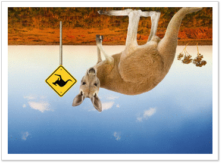
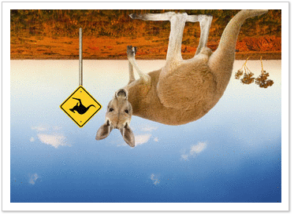

Outback
nendliche Weite, unwirkliche rote Hügel, die aus dem Nichts auftauchen. Genau wie das säße Känguru, das plötzlich
Ihren Weg kreuzt.
Irgendwo dreht sich leise ratternd ein Windrad. In der Ferne erspähen Sie ein rustikales Farmhaus mit Wellblechdach:
Willkommen im Outback Australiens!
Die kleinen Bennett-Kängurus stellen sich Ihnen in ihrer neuen Anlage gern aus nächster Nähe vor. Wie nah,
entscheiden die Beuteltiere allerdings selbst.
Eine Taschenkontrolle werden die Tiere bestimmt nicht zulassen, aber wenn Sie in die Hocke gehen, können Sie den
Tieren direkt in die Augen sehen!
zurück zur Hauptseite